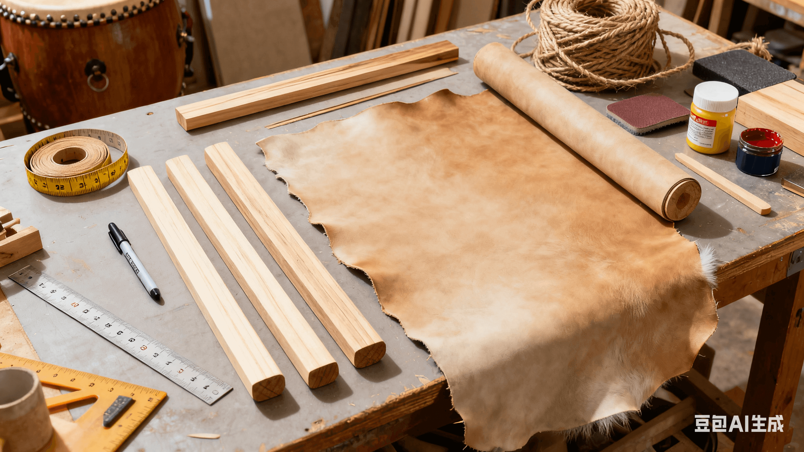
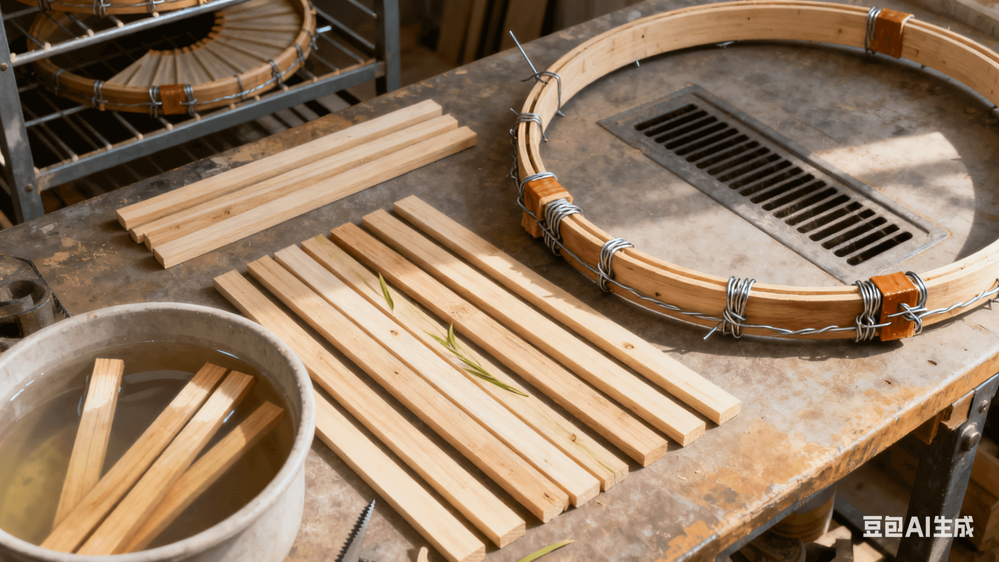
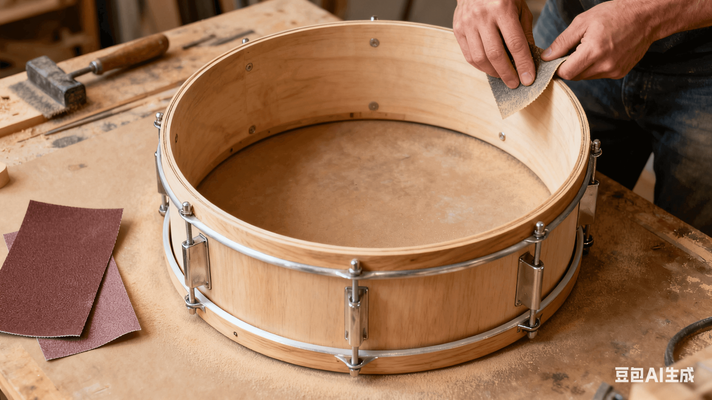
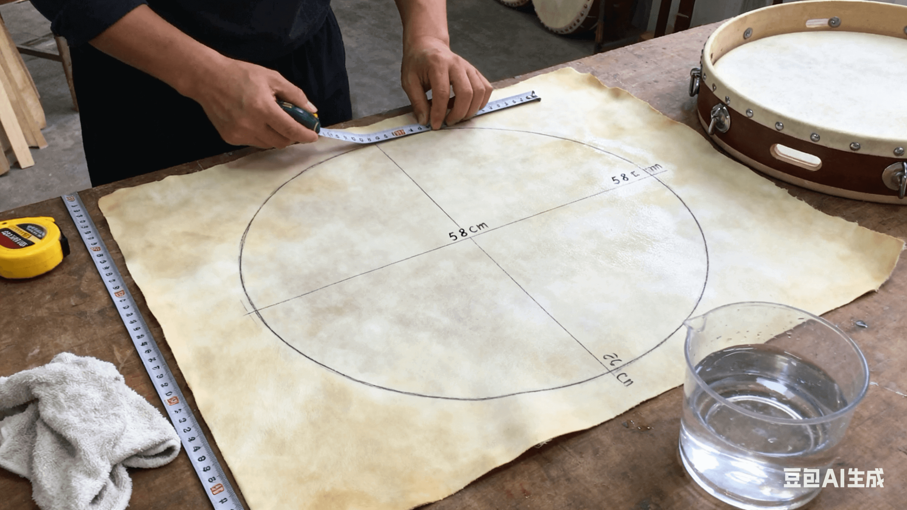
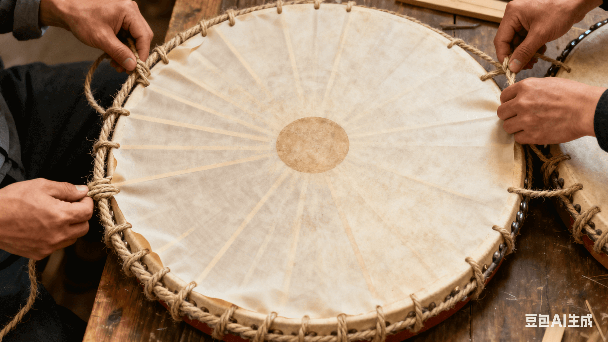
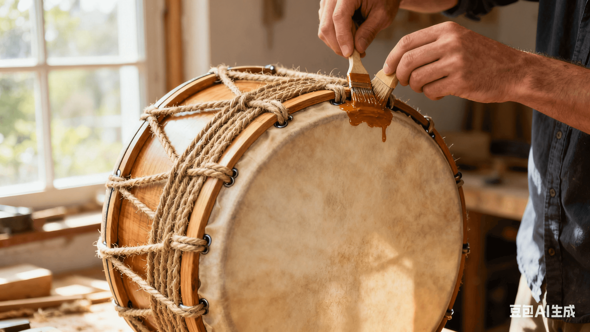
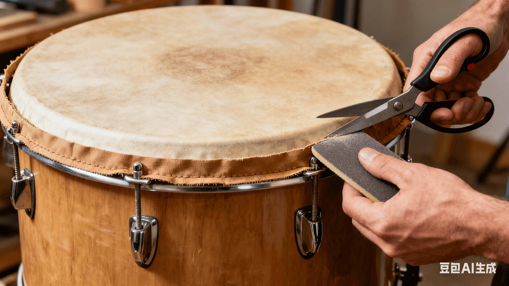
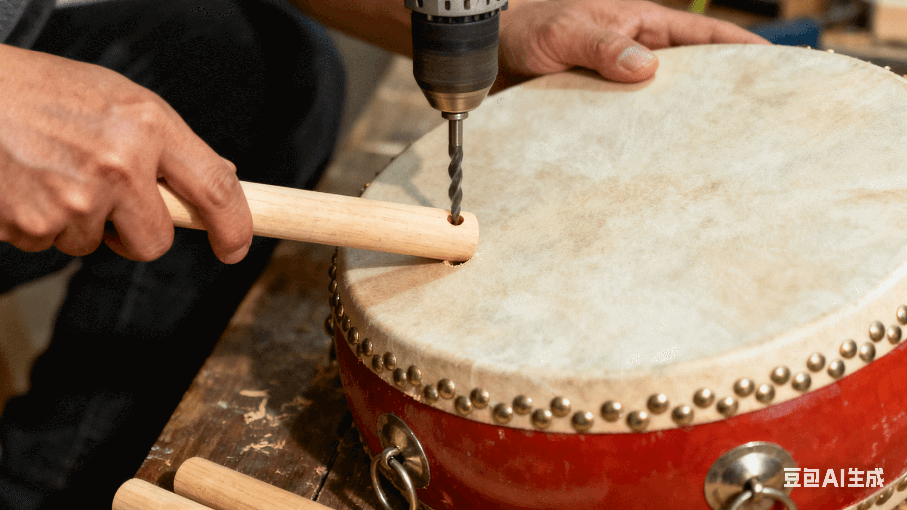

扇鼓制作过程
1. 确定规格与备料

 明确扇鼓尺寸
明确扇鼓尺寸
 准备柳木羊皮等
准备柳木羊皮等
2. 制作鼓圈骨架

 将木材锯成木条
将木材锯成木条
 放入温水中浸泡2软化
放入温水中浸泡2软化
 把木条弯曲在接口粘合
把木条弯曲在接口粘合
 放置通风处晾干24小时
放置通风处晾干24小时
3. 打磨鼓圈

 用砂纸打磨外圈和内圈
用砂纸打磨外圈和内圈
 去除毛刺和接口凸起
去除毛刺和接口凸起
 用细砂纸精细抛光
用细砂纸精细抛光
 避免后续刮破鼓面
避免后续刮破鼓面
4. 裁剪鼓面材料

 裁出比鼓圈大6厘米鼓面
裁出比鼓圈大6厘米鼓面
 用清水轻轻擦拭鼓面
用清水轻轻擦拭鼓面
 去除表面灰尘和杂质
去除表面灰尘和杂质
 自然晾干备用
自然晾干备用
5. 蒙皮固定

 将鼓面平铺在鼓圈上
将鼓面平铺在鼓圈上
 将鼓面缠绕固定
将鼓面缠绕固定
 另面重复相同操作
另面重复相同操作
 确保两面张力一致
确保两面张力一致
6. 加固与干燥

 在麻绳处涂抹木胶
在麻绳处涂抹木胶
 将鼓体竖放通风处
将鼓体竖放通风处
 自然干燥48小时
自然干燥48小时
 让木胶和鼓面贴合
让木胶和鼓面贴合
7. 修剪多余鼓面

 修剪掉余的鼓面材料
修剪掉余的鼓面材料
 保留1-2厘米的包边
保留1-2厘米的包边
 用细砂纸轻磨包边处
用细砂纸轻磨包边处
 避免毛边残留
避免毛边残留
8. 安装鼓柄

 选取30厘米木棍做鼓柄
选取30厘米木棍做鼓柄
 在鼓圈侧面钻孔
在鼓圈侧面钻孔
 将鼓柄插入孔中
将鼓柄插入孔中
 缝隙处注入木胶加固
缝隙处注入木胶加固
9. 装饰与收尾